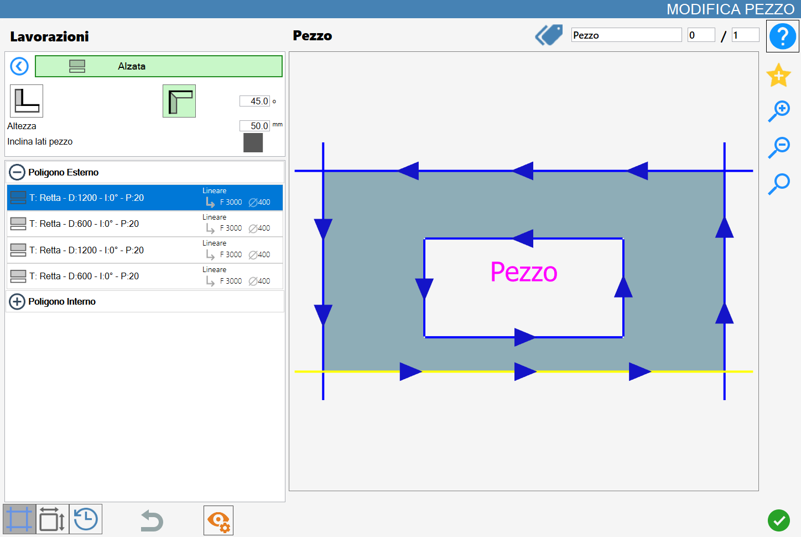
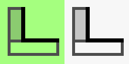
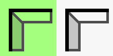
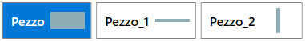
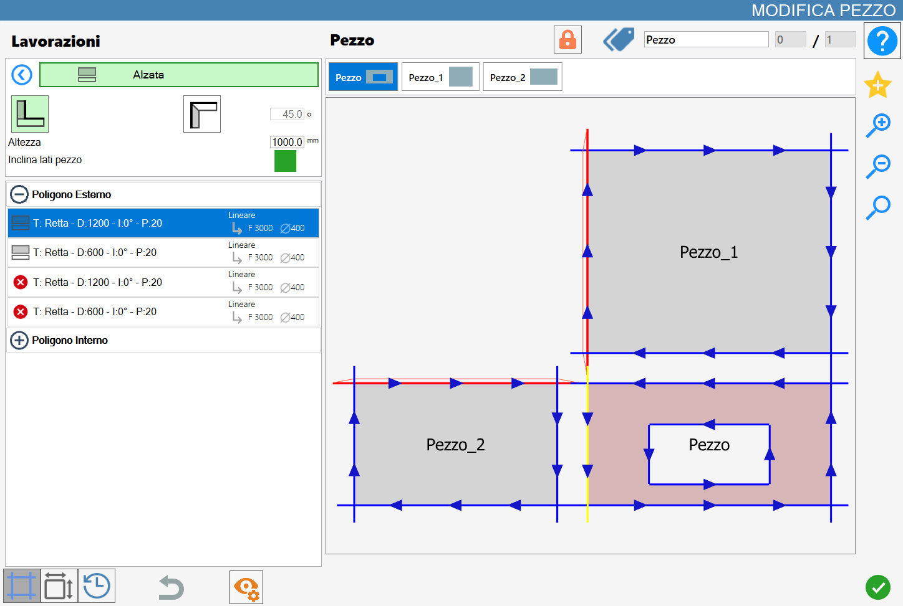
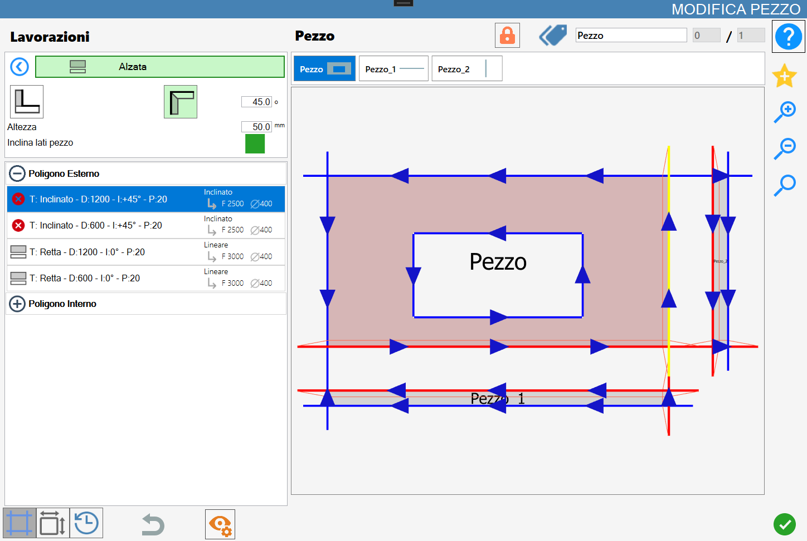
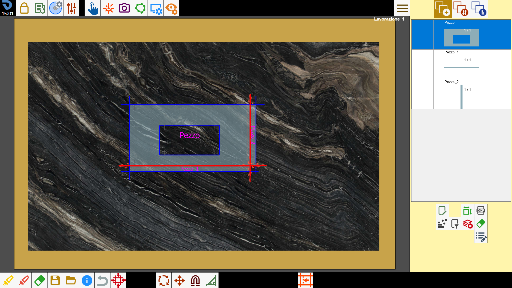

This function allows to create a rectangular piece starting from the side of an object, in order to obtain a rise.

Working types
To use this working, it is necessary to choose one of the two available modes, selecting the corresponding button:
 | Backsplash Mode |
 | Upstand |
Parameters
Height | Height of the spoiler that will be inserted during the execution of the working. |
Miter sides piece | If enabled it inserts automatically miter cut in case of cuts that would collide. |
Additional parameter downstand
Degrees | This parameter is active only when the Cladding mode is selected. |
Execution of working
NOTEIt is possible to apply the working by pressing the button on the left of the appropriate cut in the polygon list.An icon red with a 'X' indicates that the process can not be applied to the desired cut.
By clicking directly on the cut in the preview, or on the icon on the left of the cut in the related list on the left side when possible, the selected working will be executed.
At each rise or fitting applied successfully in the material corresponds the updating of the preview and of the cut list on the left.
Each piece created with this functionality will be added in the pieces list of Parametrix.
The new pieces introduced, they will be added in a list placed just above the preview in the 'Edit Piece' panel;

From this list it is possible to select the piece of the block desired to visualize its preview and the related cuts in the cuts list.
Backsplash Execution
It is now shown the application of two coatings in the case in which the parameter 'Inclina sides piece' is enabled or disabled.
A coating of height 1000 mm is applied first on the lower side of the rectangle and then a second coating on the right side of the same.
Miter sides piece disabled
Miter cuts do not appear in the obtained result and the cuts of the original piece are not modified in the cuts list:

Miter sides piece enabled
In case of alignment vertices of the new pieces or Piece_1 and Piece_2, the sides with common vertex not adjacent to the original piece will be replaced and replaced with angled cuts:

Execution of Upstand
Now it's shown the application of two lifts in the case in which the 'Inclina lati pezzo' parameter is enabled or disabled.
First a downstand of height 50 mm is applied on the bottom side of the rectangle and subsequently a second downstand on the right side of the same.
In this mode, the original piece (Piece) and each eventual piece generated (Piece_1 and Piece_2) will automatically have miter cut applied on all sides that result adjacent to each other.
The inclination angle is determined by the degrees.
Miter sides piece disabled
In this case the adjacent sides between the original piece and the new pieces created are automatically replaced by miter cut.
The inclination of the cut depends on the Degrees parameter set.

Miter sides piece enabled
As in the previous case, miter cuts are inserted in the cuts adjacent to the various pieces and the inclination depends on the value of the parameter Gradi.
Furthermore, by enabling the 'Tilt piece sides' parameter, as in the case of cladding, if the new pieces present a alignment of vertices, the sides with a vertex in common, not adjacent to the original piece, are automatically replaced with miter cuts.

Division of pieces
When the piece selected is associated with one or more pieces through workings of Lift or Coating, it appears in the upper part of the Modify Piece panel a specific button for the management of the associated pieces.
 | Split pieces |
|---|
Before the split, the associated pieces are managed in a unified way inside the work area. In this state, a block composed of multiple elements is created that will undergo the same operations, without yet being divided.
For example, when the original piece or a riser or a coating is added to the working area from the piece list, also all the other associated elements are automatically inserted.

At the pressure of the button Divide Pieces, each piece generated through raise or coating will be dissociated from the original piece and treated as an independent element.
Subsequently, both the piece list associated, previously visible above the preview in the Edit piece panel, and the button for splitting pieces will disappear from the interface.
NOTEAt the time of division, each piece maintains the miter cuts obtained during the generation through lift or coating, in addition to all the customizations and modifications made while it was still associated with the original piece.
In the following image, it is possible to observe the diversified management of the single pieces previously belonging to the same block.
In particular are inserted in the work area only two of the three pieces (the original piece and the first piece generated from the application of the first rise), and the second piece is relocated and rotated without triggering any interference to the original piece: